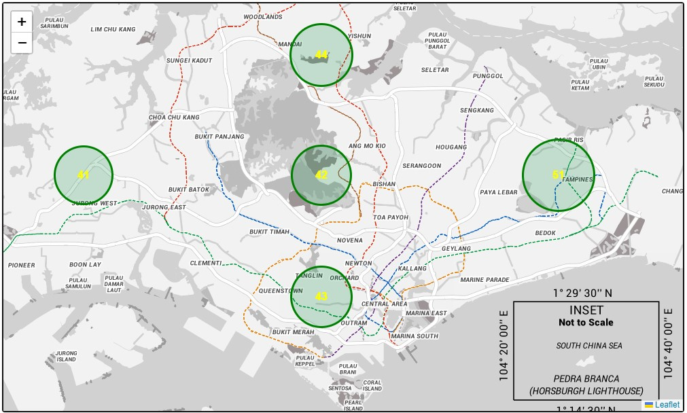

Assignment 5
Leaflet + OneMap
Setup
To be completed before 28-7-2022(Thurs) 2359hrs
- This repo link will be of the format https://<username>.github.io/CSC3007-assignment5
- In the repo create a basic index.html file, and make it visible on GitHub repo pages (it's under the settings tab, under GitHub pages).
- You can put your CSS style tags, HTML and JS script code into one file, or organize them into files/directories.
Why + What
- Why: Simple geospatial viz for learning purposes.
- What: Geospatial viz of the PSI API data from assignment 1.
- The URI for the API is: https://api.data.gov.sg/v1/environment/psi
- You are free to use an alternative to leaflet, but you must use one of SLA's base maps.
Sample screenshot
Live PSI 24hr reading on the map
You can use the easier basic marker pop-up instead of custom circle markers + labels
Extra challenge
Make sure you load the data live from the API (which you have already done in assignment 1)!
Color of circle to scale with value of PSI rating if using circle markers / labels
Grading key
- Load of OneMap API map base: 2 marks
- PSI viz (with simple markers): 3 marks
- PSI viz (with circles as markers, text labels, live data): 4 marks
Questions?
Chi-Loong | V/R